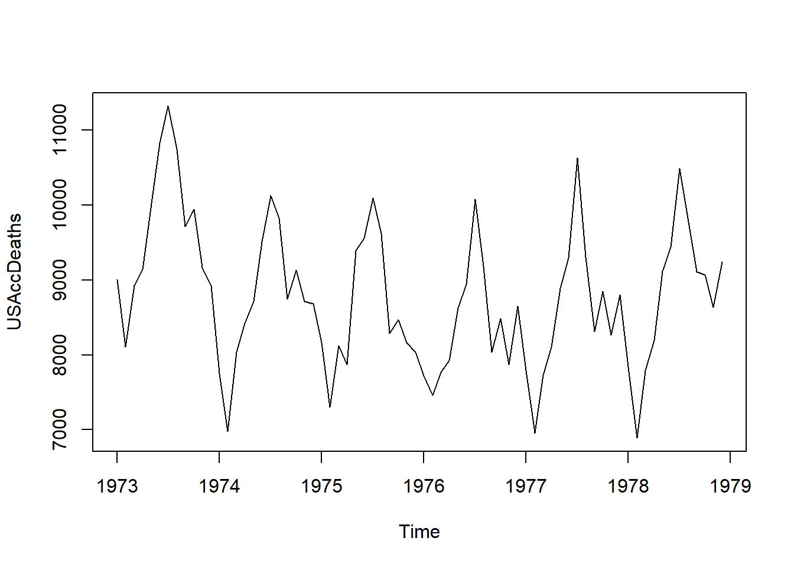
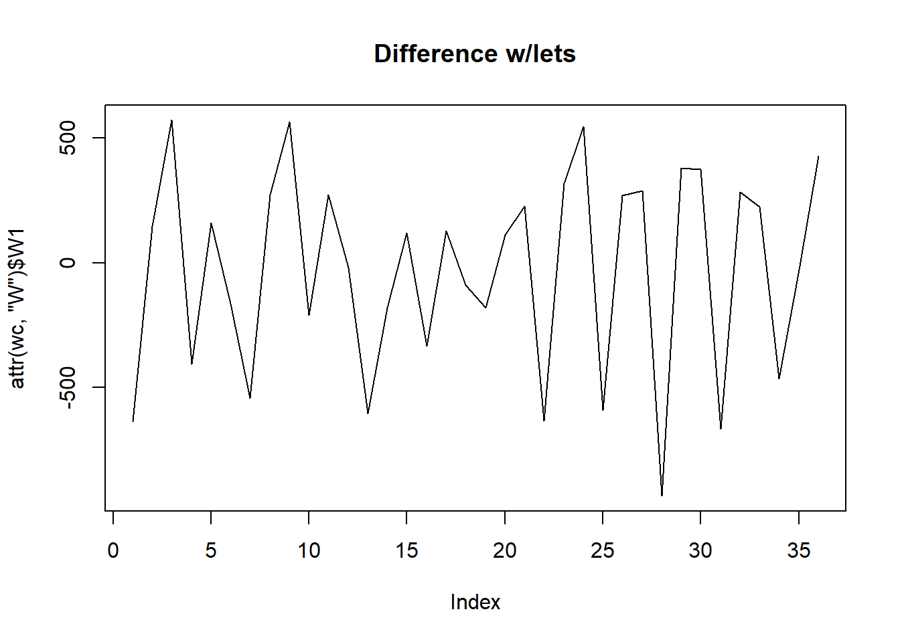
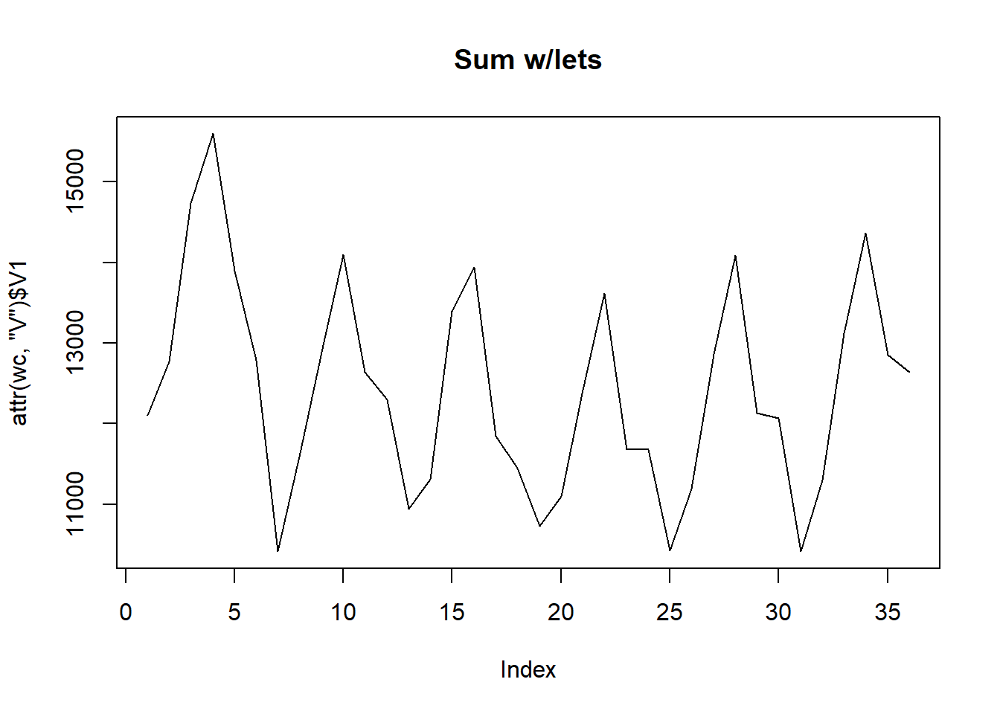
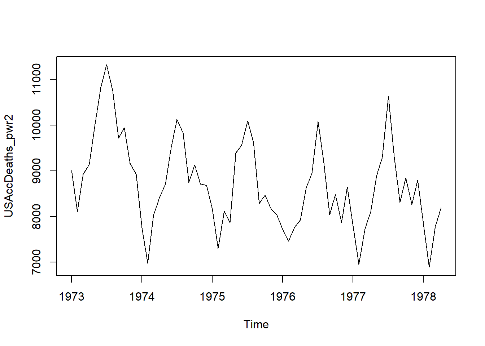

Just trying to emulate basic Haar Discrete Wavelet Transform in R (the original DWT). Using the ‘USAccDeaths’ dataset (a time series), here is some code that wavelet transforms this time series.

Now here is some code in the ‘wavelets’ library to do a Haar DWT on the time series. We can see that there are two decomopositions, ‘W’ and ‘V’:
library(wavelets)
wc <- wavelets::dwt(c(USAccDeaths), filter = "haar")
attr(wc,'W')## $W1
## [,1]
## [1,] -637.10321
## [2,] 147.78532
## [3,] 572.04939
## [4,] -405.17219
## [5,] 159.09903
## [6,] -165.46299
## [7,] -543.76511
## [8,] 271.52900
## [9,] 564.27121
## [10,] -210.01071
## [11,] 272.94322
## [12,] -21.21320
## [13,] -605.28340
## [14,] -179.60512
## [15,] 119.50105
## [16,] -334.46151
## [17,] 127.98633
## [18,] -89.09545
## [19,] -181.01934
## [20,] 111.72287
## [21,] 227.68838
## [22,] -635.68900
## [23,] 318.90516
## [24,] 546.59354
## [25,] -590.43416
## [26,] 268.70058
## [27,] 289.20667
## [28,] -935.50227
## [29,] 379.00923
## [30,] 375.47370
## [31,] -667.50880
## [32,] 283.54982
## [33,] 225.56706
## [34,] -464.56916
## [35,] -28.28427
## [36,] 429.21382
##
## $W2
## [,1]
## [1,] 476.0
## [2,] 609.0
## [3,] -781.5
## [4,] 864.5
## [5,] 858.5
## [6,] -241.0
## [7,] 263.0
## [8,] 385.0
## [9,] -278.5
## [10,] 257.0
## [11,] 844.5
## [12,] -2.0
## [13,] 541.5
## [14,] 869.0
## [15,] -51.5
## [16,] 627.5
## [17,] 881.0
## [18,] -153.5
##
## $W3
## [,1]
## [1,] 2731.5535
## [2,] -2315.0676
## [3,] -1027.7797
## [4,] 2543.4631
## [5,] -733.6233
## [6,] -1336.0783
## [7,] 2664.0248
## [8,] -1242.3866
## [9,] -992.4244
##
## $W4
## [,1]
## [1,] 1125.25
## [2,] -1575.75
## [3,] -293.50
## [4,] 2494.25
##
## $W5
## [,1]
## [1,] -1489.8740
## [2,] 226.4509
##
## $W6
## [,1]
## [1,] 265.375attr(wc,'V')## $V1
## [,1]
## [1,] 12100.72
## [2,] 12773.88
## [3,] 14738.23
## [4,] 15599.48
## [5,] 13895.36
## [6,] 12790.15
## [7,] 10416.39
## [8,] 11638.98
## [9,] 12887.73
## [10,] 14101.83
## [11,] 12637.41
## [12,] 12296.59
## [13,] 10937.53
## [14,] 11309.47
## [15,] 13394.72
## [16,] 13939.20
## [17,] 11844.75
## [18,] 11450.89
## [19,] 10732.47
## [20,] 11095.92
## [21,] 12422.45
## [22,] 13616.76
## [23,] 11684.94
## [24,] 11682.11
## [25,] 10429.12
## [26,] 11194.91
## [27,] 12861.57
## [28,] 14090.52
## [29,] 12136.78
## [30,] 12063.95
## [31,] 10414.27
## [32,] 11301.69
## [33,] 13116.12
## [34,] 14362.05
## [35,] 12855.20
## [36,] 12638.12
##
## $V2
## [,1]
## [1,] 17589.0
## [2,] 21452.0
## [3,] 18869.5
## [4,] 15595.5
## [5,] 19084.5
## [6,] 17631.0
## [7,] 15731.0
## [8,] 19328.0
## [9,] 16472.5
## [10,] 15435.0
## [11,] 18412.5
## [12,] 16523.0
## [13,] 15290.5
## [14,] 19058.0
## [15,] 17112.5
## [16,] 15355.5
## [17,] 19430.0
## [18,] 18026.5
##
## $V3
## [,1]
## [1,] 27606.16
## [2,] 24370.44
## [3,] 25961.78
## [4,] 24790.46
## [5,] 22562.01
## [6,] 24703.13
## [7,] 24288.06
## [8,] 22958.34
## [9,] 26485.75
##
## $V4
## [,1]
## [1,] 35590.25
## [2,] 33483.25
## [3,] 34642.00
## [4,] 34962.25
##
## $V5
## [,1]
## [1,] 48842.34
## [2,] 49217.64
##
## $V6
## [,1]
## [1,] 69338.87So what do these mean? Presumably, the first level (W1, V1) are the lowest level (finest) scales. But why are there two? Are there two types of transforms, or perhaps they use each other. Another thing we know is the top level is half the length (36) of the full dataset (72), so its clear that some aggregation is going on. In this case, we suspect subtraction, which it is, up to some scaling constant. The scaling constant happens to be \(\frac{1}{\sqrt(2)}\), which I believe is something to do with making the basis vectors orthnormal (length 1).
Turns out that W is the difference between adjacent terms, recursed to the most granular level.
# Look at W for example
# Not quite the same
USAccDeaths[2]-USAccDeaths[1]## [1] -901attr(wc,'W')$W1[1]## [1] -637.1032# Scaling factor of 1/sqrt(2)
(USAccDeaths[2]-USAccDeaths[1])/attr(wc,'W')$W1[1]## [1] 1.414214round(attr(wc,'W')$W1[1],10) == round((USAccDeaths[2]-USAccDeaths[1]) * 1/sqrt(2),10)## [1] TRUE# Same scaling everywhere
for(i in 1:length(attr(wc,'W')$W1)){
print((USAccDeaths[2*i]-USAccDeaths[2*i-1])/attr(wc,'W')$W1[[i]])
}## [1] 1.414214
## [1] 1.414214
## [1] 1.414214
## [1] 1.414214
## [1] 1.414214
## [1] 1.414214
## [1] 1.414214
## [1] 1.414214
## [1] 1.414214
## [1] 1.414214
## [1] 1.414214
## [1] 1.414214
## [1] 1.414214
## [1] 1.414214
## [1] 1.414214
## [1] 1.414214
## [1] 1.414214
## [1] 1.414214
## [1] 1.414214
## [1] 1.414214
## [1] 1.414214
## [1] 1.414214
## [1] 1.414214
## [1] 1.414214
## [1] 1.414214
## [1] 1.414214
## [1] 1.414214
## [1] 1.414214
## [1] 1.414214
## [1] 1.414214
## [1] 1.414214
## [1] 1.414214
## [1] 1.414214
## [1] 1.414214
## [1] 1.414214
## [1] 1.414214What is series V? Turns out it’s the addition of the first two elements, etc etc.
# Look at V for example
# Not quite the same
USAccDeaths[2]+USAccDeaths[1]## [1] 17113attr(wc,'V')$V1[1]## [1] 12100.72# Scaling factor of 1/sqrt(2)
(USAccDeaths[2]+USAccDeaths[1])/attr(wc,'V')$V1[1]## [1] 1.414214round(attr(wc,'V')$V1[1],10) == round((USAccDeaths[2]+USAccDeaths[1]) * 1/sqrt(2),10)## [1] TRUE# Same scaling everywhere
for(i in 1:length(attr(wc,'W')$W1)){
print((USAccDeaths[2*i]+USAccDeaths[2*i-1])/attr(wc,'V')$V1[[i]])
}## [1] 1.414214
## [1] 1.414214
## [1] 1.414214
## [1] 1.414214
## [1] 1.414214
## [1] 1.414214
## [1] 1.414214
## [1] 1.414214
## [1] 1.414214
## [1] 1.414214
## [1] 1.414214
## [1] 1.414214
## [1] 1.414214
## [1] 1.414214
## [1] 1.414214
## [1] 1.414214
## [1] 1.414214
## [1] 1.414214
## [1] 1.414214
## [1] 1.414214
## [1] 1.414214
## [1] 1.414214
## [1] 1.414214
## [1] 1.414214
## [1] 1.414214
## [1] 1.414214
## [1] 1.414214
## [1] 1.414214
## [1] 1.414214
## [1] 1.414214
## [1] 1.414214
## [1] 1.414214
## [1] 1.414214
## [1] 1.414214
## [1] 1.414214
## [1] 1.414214Now for some plots…
plot(USAccDeaths)plot(attr(wc,'W')$W1, main = 'Difference w/lets', type = "l")
plot(attr(wc,'V')$V1, main = 'Sum w/lets', type = "l")
To go one level up, we take the added wavelet coefficients (stored in V), and aggregate them by differencing (result will be W2), or summing (result will be V2).
# Differencing
(attr(wc,'V')$V1[2] - attr(wc,'V')$V1[1])/attr(wc,'W')$W2[1]## [1] 1.414214# Summing
(attr(wc,'V')$V1[2] + attr(wc,'V')$V1[1])/attr(wc,'V')$V2[1]## [1] 1.414214Etc. And this is how we work our way up the wavelet ‘tree’. Turns out (according to HJ’s presentation), we just take the differences at each level, which corresponds to only using the ‘W’ part of the wavelet transform (V just for working). Although it should be analogous to just taking the W part - both should have the same informational content? (Both are 1:1, as long as one or the other are used?)
What I mean is that, by default, the set ‘W’ consists of the following info:
Base data: \[\begin{align*} X_1, X_2, X_3, X_4 \\ \end{align*}\] Set \('W'\): \[\begin{align*} X_1 - X_2, X_3 - X_4 \\ (X_1 + X_2) - (X_3 + X_4) \\ (X_1 + X_2) + (X_3 + X_4) \\ \end{align*}\] Contains all info to reconstruct all 4. (4 eqns, 4 variables). Should contain same informational content as: \[\begin{align*} \text{Set }'W_{alt}': \\ X_1 + X_2, X_3 + X_4 \\ (X_1 - X_2) + (X_3 - X_4) \\ (X_1 - X_2) - (X_3 - X_4) \\ \end{align*}\]Let’s see if we can replicate the above using the ‘wavethresh’ package. Note that ‘wavethresh’ only accepts data which has a length which is a power of two.
length(c(USAccDeaths))## [1] 72USAccDeaths_pwr2 <- ts(c(USAccDeaths[1:64]),start = 1973,frequency = 12)
plot(USAccDeaths_pwr2)
wthresh <- wavethresh::wd(c(USAccDeaths_pwr2), filter.number=1, family="DaubExPhase")
str(wthresh)## List of 8
## $ C : num [1:127] 9007 8106 8928 9137 10017 ...
## $ D : num [1:63] 637 -148 -572 405 -159 ...
## $ nlevels : int 6
## $ fl.dbase:List of 4
## ..$ first.last.c: num [1:7, 1:3] 0 0 0 0 0 0 0 0 1 3 ...
## .. ..- attr(*, "dimnames")=List of 2
## .. .. ..$ : NULL
## .. .. ..$ : chr [1:3] "First" "Last" "Offset"
## ..$ ntotal : num 127
## ..$ first.last.d: num [1:6, 1:3] 0 0 0 0 0 0 0 1 3 7 ...
## .. ..- attr(*, "dimnames")=List of 2
## .. .. ..$ : NULL
## .. .. ..$ : chr [1:3] "First" "Last" "Offset"
## ..$ ntotal.d : num 63
## $ filter :List of 5
## ..$ H : num [1:2] 0.707 0.707
## ..$ G : NULL
## ..$ name : chr "Haar wavelet"
## ..$ family : chr "DaubExPhase"
## ..$ filter.number: num 1
## $ type : chr "wavelet"
## $ bc : chr "periodic"
## $ date : chr "Thu May 16 23:52:31 2019"
## - attr(*, "class")= chr "wd"Two main outputs here:
length(wthresh$C)## [1] 127length(wthresh$D)## [1] 63And we see that the outputs are: - C has length 127 - D has length 63 - nlevels = 6 (2^6 = 64) What do these mean?
C’s elements are all the sums at all the scales. This INCLUDES the bottom scale. Ie, the bottom scale is the sum of each value (just itself). Then at the next scale, it takes the sum of adjacent bottom scale values. These are all scaled, also, by the scaling coefficient, H (see below). In this case, H is \(1/sqrt(2)\). This goes all the way until the end, which is the sum of the previous two values in C, scaled. Note that we power the scaling coefficient here, as we do our summing on the raw data, rather than the lower scale results (which are scaled). Hence, we need to multiply the raw data sums by as many times as they would be required to be scaled in getting to that level’s result, as if we were to achieve the result using coefficients from lower scales.
c_vect <- c()
for(i in 0:(wthresh$nlevels)){
starts = seq(1,64, by = 2^(i))
ends = starts + (2^(i)) - 1
add_to_vect <- c()
for(j in 1:length(starts)){
add_to_vect <- c(add_to_vect
,(sum(USAccDeaths_pwr2[starts[j]:ends[j]])*(wthresh$filter$H[1])^i))
}
c_vect <- c(c_vect,add_to_vect)
}
all.equal(c_vect,wthresh$C)## [1] TRUED’s elements are (from finest to coarsest) the wavelet coefficients we’re after. We start by differencing adjacent values of the raw datya, then scaling the difference. Next level is the difference of the adjacent sums of two larger windows (ie the next scale up in the ‘C’ datset which captured the adjacent sums), and the difference scaled once more. All scaled by the ‘H’ value under the wthresh filter (H[1], which is equal to H[2] in this case). Once again, we’ll do the transform on the raw data, hence powering the scaling coefficient by one more time each level up, to represent the fact that differences are calculated on (already scaled) adjacent sums.
# Replicate our own 'D' vector:
d_vect <- c()
for(i in 1:wthresh$nlevels){
starts = seq(1,64, by = 2^(i-1))
ends = starts + (2^(i-1)) - 1
add_to_vect <- c()
for(j in 1:(length(starts)/2)){
add_to_vect <- c(add_to_vect
,(sum(USAccDeaths_pwr2[starts[(2*j) - 1]:ends[(2*j) - 1]]) -
sum(USAccDeaths_pwr2[starts[(2*j)]:ends[(2*j)]])) *
(wthresh$filter$H[1]^i))
}
d_vect <- c(d_vect,add_to_vect)
}
all.equal(d_vect,wthresh$D)## [1] TRUE